Drei Varianten in der Farbwelt der App. Nichts davon ist eingebunden — Auswahl offen.
Der dynamische Abendhimmel der App als Icon: tiefstehende Sonne über dem Horizont, Sterne, Spiegelung im Wasser.
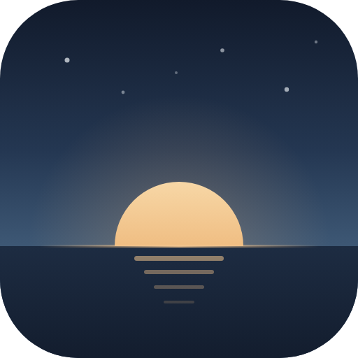
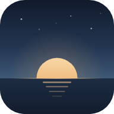
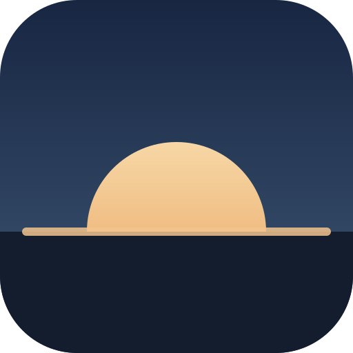
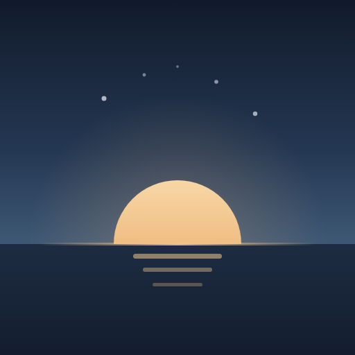
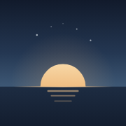
Geometrisch-flach: Amber-Sonne mit Strahlen, darunter Regen in den Blau-Tönen der App. Am klarsten lesbar in kleinen Größen.
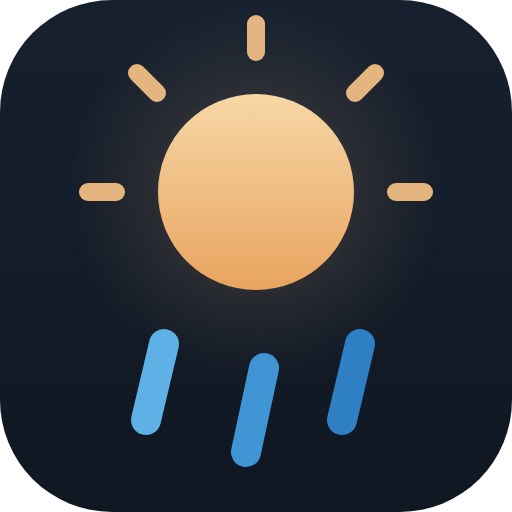
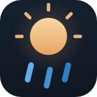
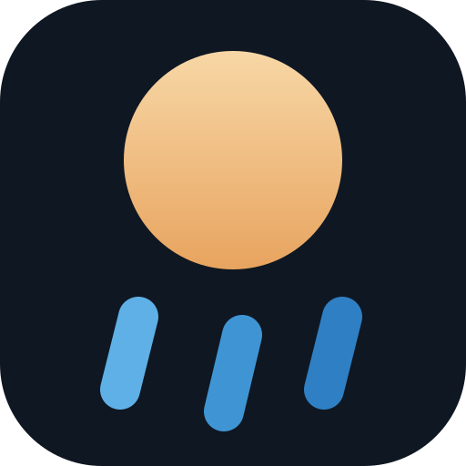
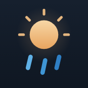
Anspielung auf den 7-Tage-Temperaturverlauf: eine Kurve von Regenblau nach Amber, die in der Sonne endet. Am eigenständigsten.
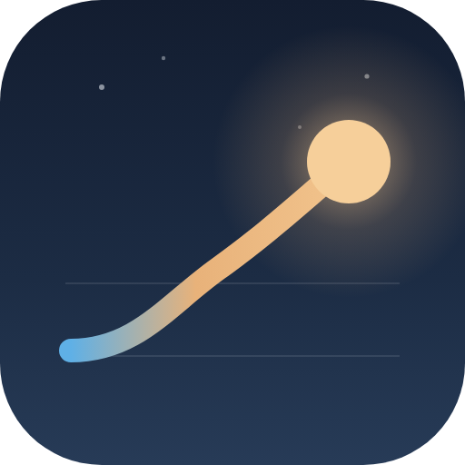
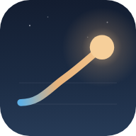
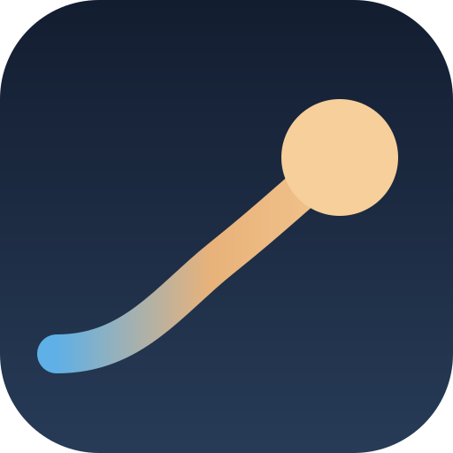
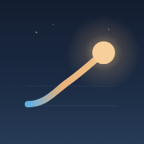
Aktuelles Icon neben den drei Entwürfen.
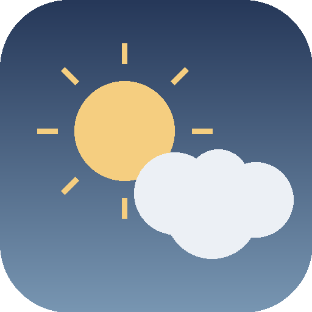